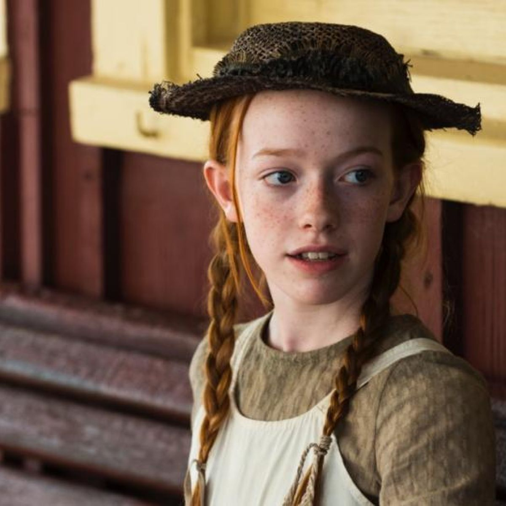
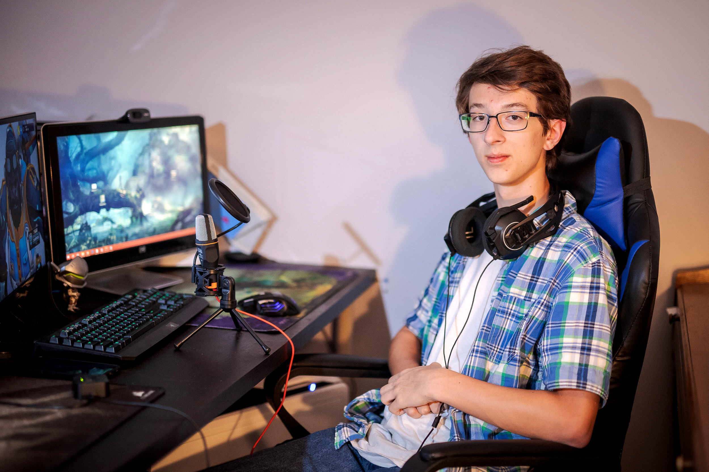

Type: Primary

Name: Sarah Cristescu
Background
Date of Birth: 24/01/2008
Gender: Female
Location: Suceava, Romania
Work place: in school
School: Colegiul National de Informatica Spiru Haret
Technology Level: low
Main Points
Sarah loves to play mobile games.
She likes simple games like: Tic-Tac-Toe, Hangman and other games.
Detailed Description
Sarah is a 14 years old ambitious pupil and likes to keep in touch with new mobile games. One of her favorite games
is Tic-Tac-Toe, a game that she was playing from a young age with her grandmother. As an competitive spirit, Sarah
is always looking for new opponents to play with and an online version of the game can make her desire came true.
Goals
Even though Sarah has a passion on mobile games, she always want to help old people.
Her grandmother supports her and inspired her in being a good kind person and therefore Sarah's dream is doing charity as a profession.
Frustrations and Pain Points
-
She thinks that there are too less good people out there to help the ones in need.
-
She never finds someone as good as her when playing her favorite games.
Scenarios
Scenario 1: Sarah is looking for a new version of Tic-Tac-Toe to play with her grandmother.
Scenario 2: When her grandmother is busy, Sarah plays the game against the computer or against other persons.
Other Details
Sarah was 8 years old when her parents passed away in a car accident. :(
Type: Primary

Name: George Ezra
Background
Date of Birth: 18/09/2002
Gender: Male
Location: Hertford, UK
Work place: Student
School: Computer Science - Hertford College
Technology Level: advanced
Main Points
George is a Computer Science student in his first year, curious and passionate about technology and IT.
Detailed Description
George is one of the best students from college, he always wants to understand things in a deep manner and
understand how certain thinks work and how they were made. He is a big fan of Elon Musk and follows all the
IT news.
Goals
George wants to graduate and get a job at a big IT company, Google.
Frustrations and Pain Points
-
He hates lazy people.
-
He can't make friends easily.
-
He would prefer to do more practical activities in college.
Scenarios
Scenario: George wants to see how diferent apps behave and analyze how they were build, what impact does it have
and how the design interact with the user.
Other Details
He wants to be independent as soon as possible. He got first place at a math competition.
Type: Secondary
Name: Daniel Santos
Background
Date of Birth: 01/06/1994
Gender: Male
Location: Barcelona, Spain
Work place: CheckApp Ins
School: Degree in Computer Engineering, Univeristat de Barcelona
Technology Level: advanced
Main Points
If you want to characterize Daniel in a word, that word is hardworking. Everyone wants to work with Daniel,
he is extremly patient, explains his point of view even if it hurts and loves animals.
Detailed Description
Daniel is working at a company where he analyze new apps in search of a good ideea in order to came with
improvments or buy the app. His experience of 3 years of doing this helped him gain knowleadge about many
technologies and make new friends.
Goals
He wants to have a happy life with his 3 dogs, to travel the world and learn to make best pasta.
Frustrations and Pain Points
-
His new dog not listening to him.
-
Some good ideeas apps not having enough contact details or the implementation is poor.
Scenarios
Scenario 1: At the work, as a recommandation.
Scenario 2: Looking by himself on AppStore/GoogleStore for new-ish apps.
Other Details
He is playing tennis weekly with his 3 best friends.
Type: Secondary

Name: Samuel Popa
Background
Date of Birth: 12/03/2001
Gender: Male
Location: Iasi, Romania
Work place: student
School: FEEA, UAIC
Technology Level: low
Main Points
Samuel is a teenage gamer that enjoy playing new games with his online friends or alone.
Detailed Description
Samuel is currently student and the majority of his free time is spent playing different kind of games.
His favorite game is Dota and he and his 2 friends are playing online, speaking and enjoying the moment.
Samuel have a YouTube channel where he post videos of him playing certain games.
Goals
Samuel wants to reach 100K subscribers on YouTube.
Frustrations and Pain Points
-
Not all the people that watches his video are subscribed yet.
Scenarios
Scenario: The followers ask Samuel to try a different game once 2-4 weeks. One of the propose was: Tic-Tac-Toe.
Other Details
He was on top 10 players in a tournament in 2019.